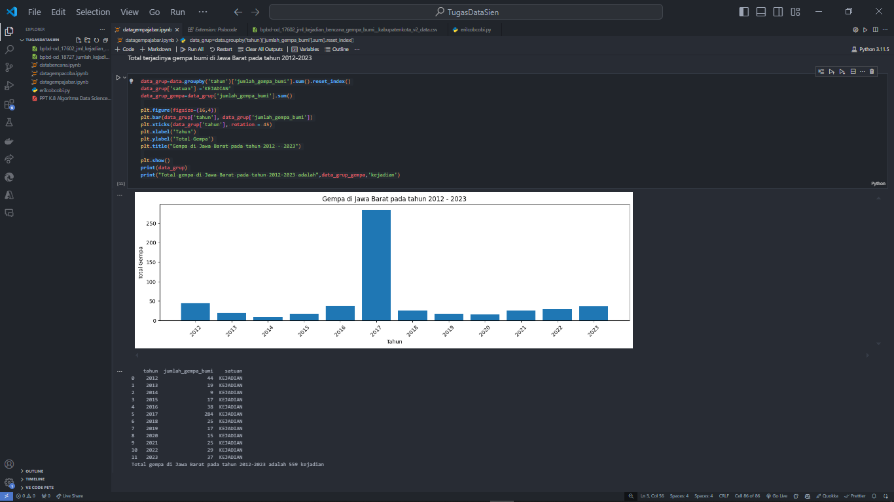

Context / Problem
Academic Project for the second semester, I collected data that had been processed by the West Java Statistics Agency (BPBD) and analyzed 324 earthquake incidents in various regions of West Java from 2012 to 2023 through visualization and analysis to provide meaningful insights.
Tech Stack & Methods
Python
Pandas & NumPy
Jupyter Notebook & Visual Studio Code
Data Cleaning & Data Visualization
BPS Jawa Barat
324 Baris Data
Key Features & Insight
Data Visualization
Analyzing data visually using Matplotlib and Numpy to display earthquake distributions.
Detailed Analysis
In-depth exploration of the dataset to discover hidden insights and patterns.
Geographic Patterns
Analysis of patterns to understand the frequency of earthquakes in various regions of West Java.
Insights
Based on the visualization results, most earthquakes occurred in 2017 with 284 incidents, dominated by the Garut Regency with 70 incidents, Tasikmalaya Regency with 61 incidents, and Sukabumi City with 58 incidents.